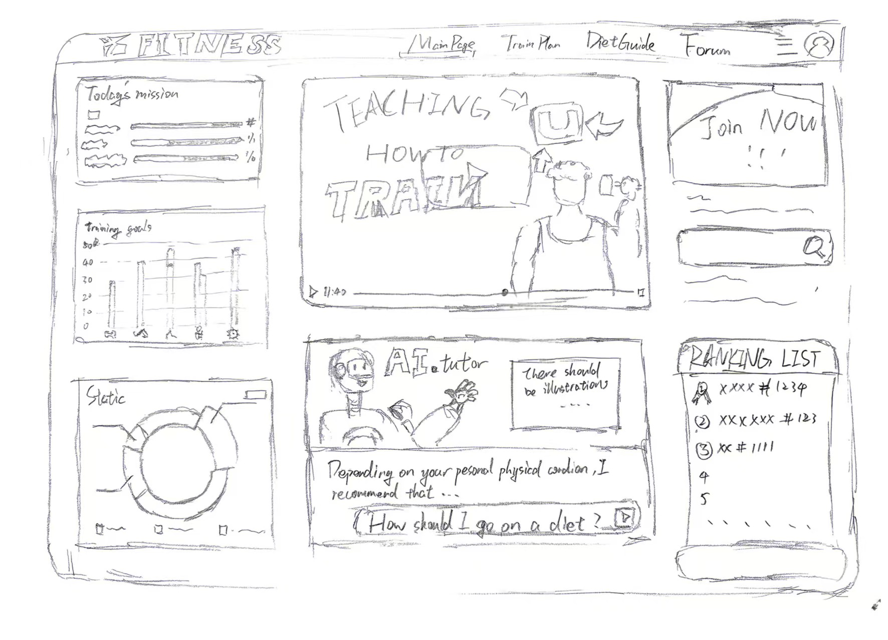
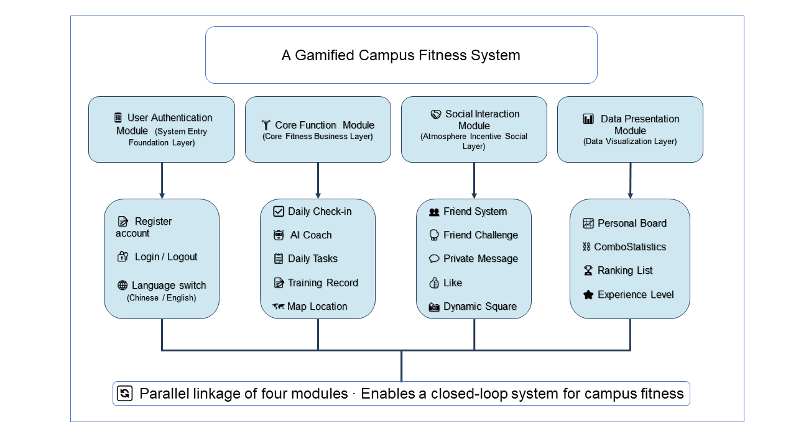

To determine the most suitable system design, three alternative approaches were explored and critically compared.

Scheme 1
Pure Functional Management-Oriented System
Description
This approach focuses on basic fitness tracking and management functions, including exercise check-in and data recording. The interface is simple, with no gamification or social interaction features.
Advantages
Simple system architecture and easy implementation
Stable performance with low maintenance cost
Clear and efficient data management
Disadvantages
Lack of user engagement and motivation mechanisms
Low long-term user retention
Does not align with the gamification objective of the project
Scheme 2
Full Social Entertainment-Oriented System
Description
This design emphasizes social interaction, competitive challenges, and community engagement, with a strong focus on entertainment features while reducing emphasis on fitness tracking and guidance.
Advantages
High user engagement and interactivity
Strong social connectivity
Attractive in the short term
Disadvantages
Weak support for actual fitness improvement
Overemphasis on entertainment may reduce effectiveness
Lacks professional fitness guidance
Misaligned with campus fitness education goals

Scheme 3Final Solution
Gamified Incentive + Personalized Guidance + Lightweight Social Integration
Description
This approach integrates gamified incentives with personalized fitness guidance and lightweight social interaction. It focuses on simple exercise check-ins, motivational rewards, and AI-supported recommendations.
Advantages
Balances engagement, usability, and professionalism
Supports long-term habit formation
Provides personalized fitness guidance
Maintains system simplicity while enhancing user experience
Final Decision and Justification
Scheme 3 was selected as the final design because it effectively balances the strengths of the other two approaches while avoiding their limitations.
It establishes a complete user journey from: exercise initiation → motivation → long-term retention
This design aligns closely with:
user needs (motivation + usability)
project objectives (gamification + effectiveness)
real-world campus fitness scenarios
This comparison demonstrates an iterative and user-centered design process, ensuring that the final solution is both practical and engaging.